Research
Past our observational horizons: measuring the half of cosmic star formation hidden by dust.
Roughly half of all the stars ever formed were born behind veils of cosmic dust: their light absorbed and re-radiated in the infrared, invisible to the optical surveys that shaped our textbook picture of galaxy evolution. In the first billion years after the Big Bang, that hidden half is essentially unmeasured. My research revolves around one question: how much of the early Universe's star formation is hidden by dust — and when did the hidden Universe come to dominate? I answer it with the world's largest infrared and radio telescope arrays, above all ALMA: measuring the dust directly at the highest redshifts (§1), securing the cosmic distances that make those measurements possible (§2), calibrating the physics on the brightest dusty galaxies in the sky (§3), mapping the crowded environments that bias our census (§4), and helping build the instruments that will finish the job (§5).
This programme runs on competitive telescope time — including fifteen accepted ALMA programmes as PI and the 250-hour z-GAL NOEMA Large Programme as co-PI — and its datasets have supported bachelor, master and PhD thesis projects across four countries. Each thread below links to the papers behind it; the full list lives on the publications page.
A quick primer: galaxy formation in a nutshell
Setting the stage
 Boom! The Big Bang started both space and time, together with an incomprehensible amount of energy. Through several fascinating processes this energy expanded with the Universe, cooled, and condensed into matter. The distribution of matter mere seconds after the Big Bang formed the 'nucleation sites' for galaxies, and its imprint can still be seen today in the Cosmic Microwave Background — light emitted when the Universe suddenly became transparent. Since then the Universe has expanded about 1300-fold, stretching that light from optical colours into the mm-domain (a redshift, z, of 1300). After this came the cosmic dark ages: nothing but slowly-cooling neutral hydrogen and helium gently collapsing.
Boom! The Big Bang started both space and time, together with an incomprehensible amount of energy. Through several fascinating processes this energy expanded with the Universe, cooled, and condensed into matter. The distribution of matter mere seconds after the Big Bang formed the 'nucleation sites' for galaxies, and its imprint can still be seen today in the Cosmic Microwave Background — light emitted when the Universe suddenly became transparent. Since then the Universe has expanded about 1300-fold, stretching that light from optical colours into the mm-domain (a redshift, z, of 1300). After this came the cosmic dark ages: nothing but slowly-cooling neutral hydrogen and helium gently collapsing.
Forming the first stars
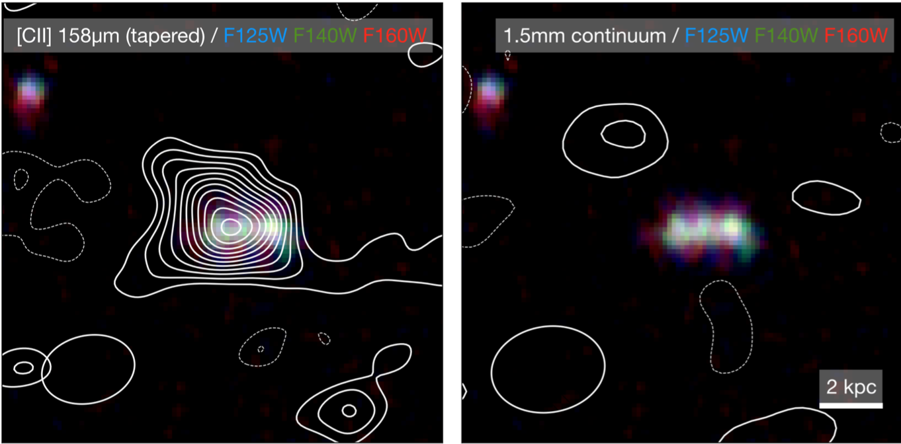
Messy, dusty business
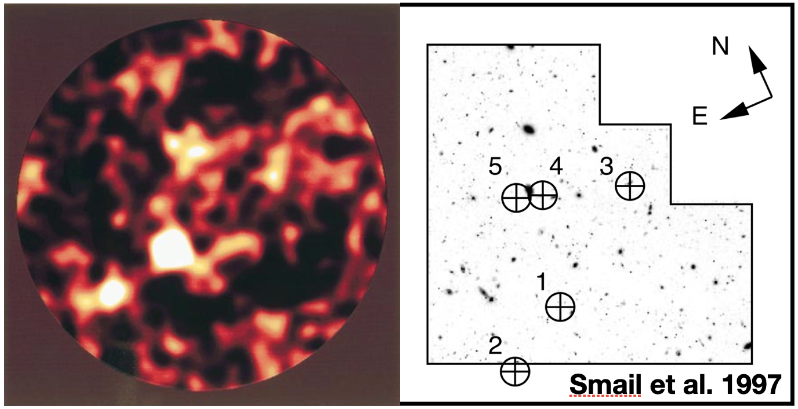
1. Dust in the first billion years
Even 600 million years after the Big Bang, much of galaxy growth is hidden behind cosmic dust. Characterising that dust — how much, how warm, how quickly it forms — is the core of my current research, and the measurement on which everything else on this page converges.
Warm dust at the highest redshifts
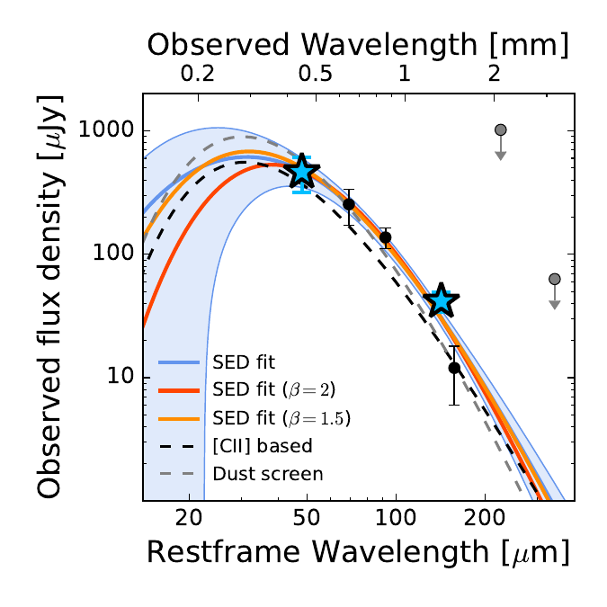
The temperature of cosmic dust
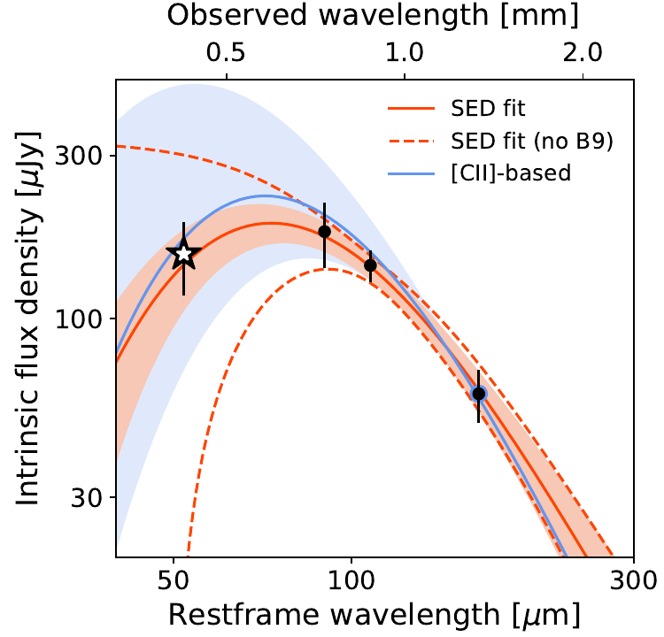
How quickly did dust form?
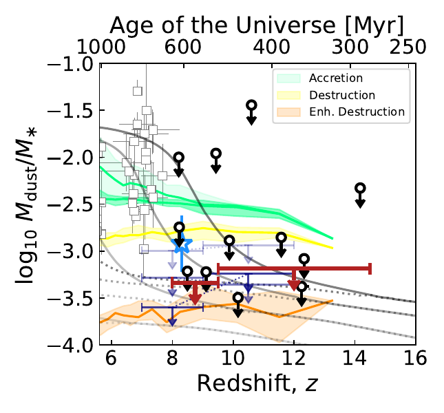
2. Cosmic distances & the JWST + ALMA frontier
Before we can study a distant galaxy, we need to know how far away it is — its redshift. Distances are the prerequisite for every dust measurement above, and at the very edge of the observable Universe they take the world's best telescopes working together.
Pinpointing distances at scale
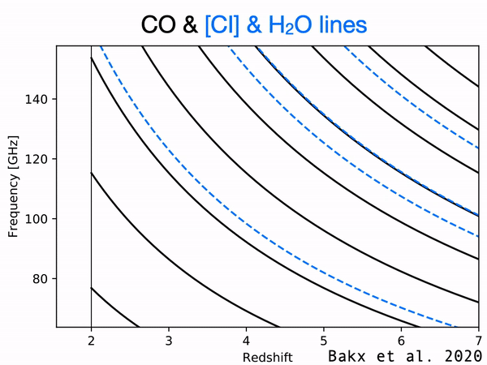
{kind=link}
Reaching the first galaxies with JWST + ALMA
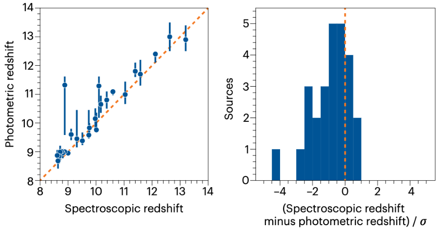
{kind=link}
3. Monster galaxies: the Universe's most extreme star factories
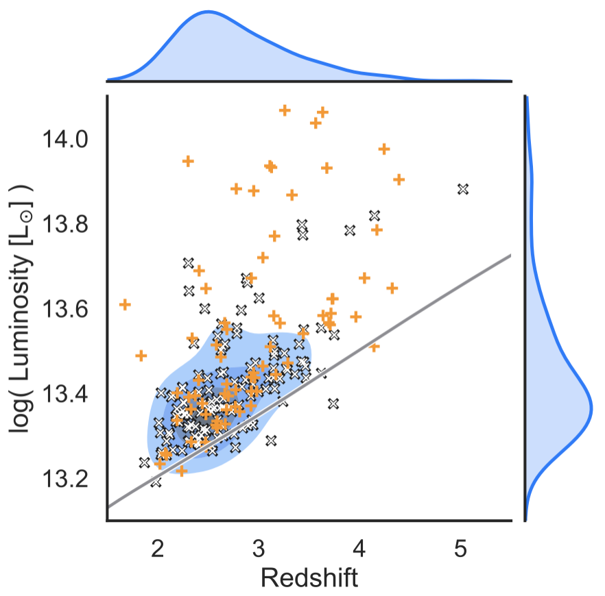
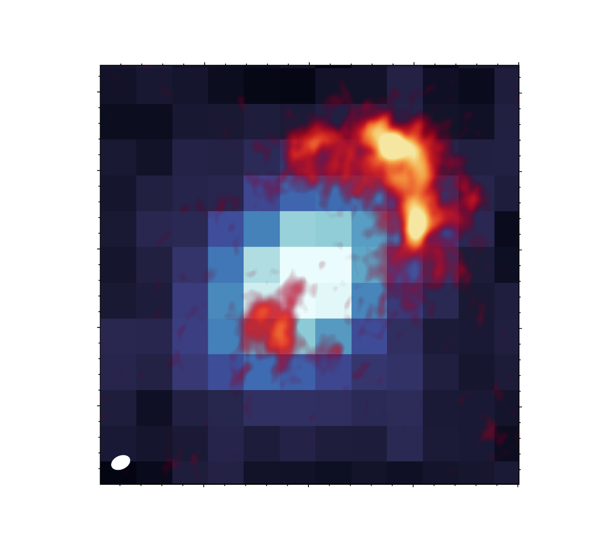
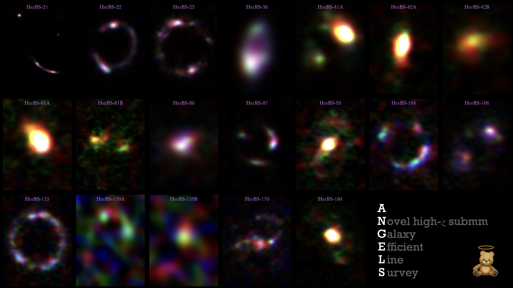
4. What galaxies are made of — and where they live
Gas conditions & resolved studies
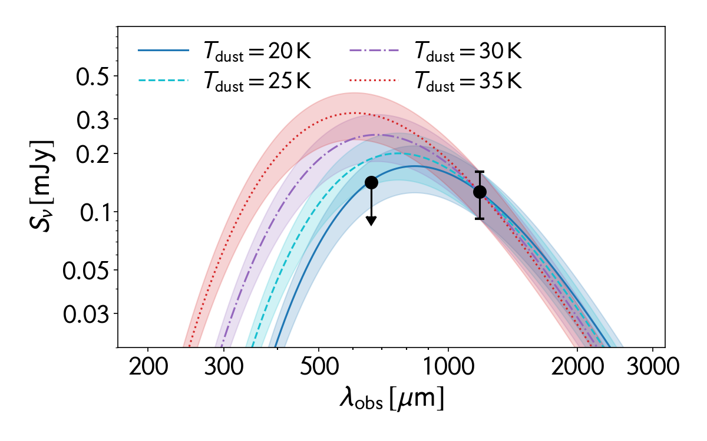
Galaxies in crowds: overdensities & protoclusters
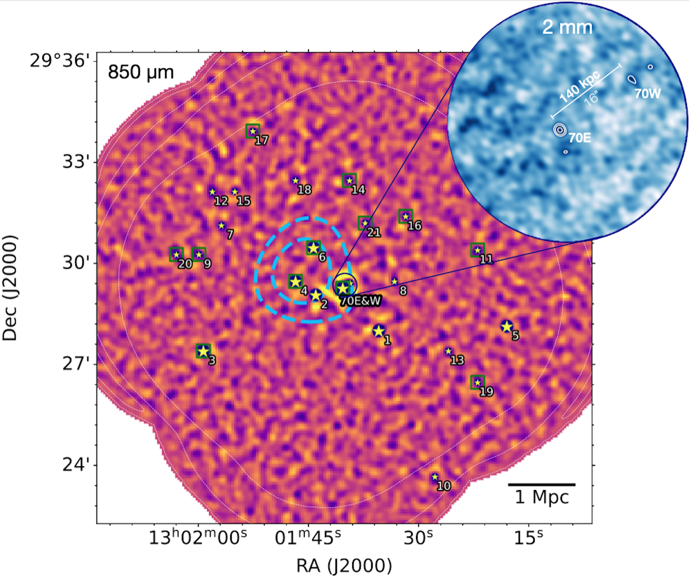
{kind=link}
5. Building the instruments
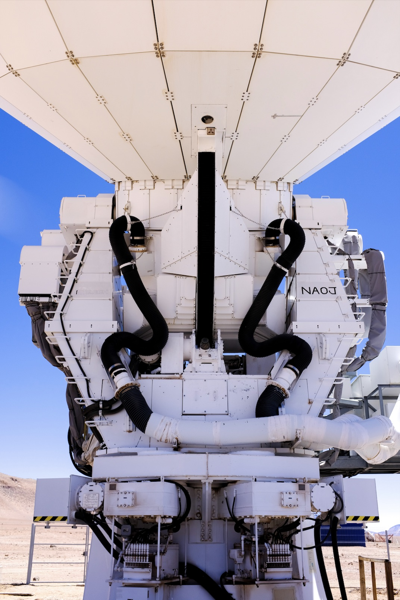
As co-leader of the ALMA2040 high-redshift working group — 250 participants across five continents — I help guide ALMA's development over the coming decades, and I compiled the technical papers behind every ALMA receiver to give that instrumental work proper visibility (Bakx & Conway 2024). I am also a Co-I on the DESHIMA, TYFOON, FINER and AtLAST instrument and telescope projects — ensuring the questions raised above can be answered with tomorrow's facilities.
6. Where this is heading
The threads above converge on one measurement: the fraction of star formation hidden by dust across the first billion years. My current results bracket it — a galaxy at z=8.3 forming 93% of its stars behind warm dust on one side, the remarkably dust-poor PIXIEDust stack on the other — and my ongoing programmes are designed to close that bracket: short-wavelength ALMA campaigns that measure dust temperatures rather than assume them, deeper stacking experiments positioned on JWST catalogues, and the ProtoCluster 3D environment census. Together they will answer when the Universe's star formation went dark — and whether that happened before or after the Universe reionized. Every stellar-mass, dust and metal budget of the first billion years will need to be weighed against that measurement, and the instruments I help design will carry the census to the fainter galaxies that make up most of the Universe.